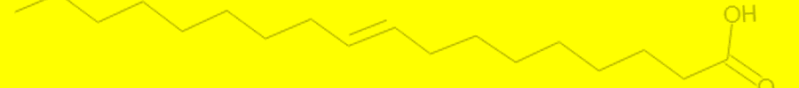

化学オリンピック
Chemistry Olympiad
ホーム化学オリンピックホーム化学オリンピックの大会一覧
化学オリンピックの大会一覧
2023年12月24日
ページ軽量化のため各大会の過去問の掲載場所を分割しました。
以下ボタンをクリックで各大会の情報に移動します。
JChO化学グランプリ
公式リンク
次回大会情報
化学グランプリ2024(JChO2024、第27回大会)の情報はまだ発表されていません。
過去大会・過去問
以下をクリックで選択した年の大会に移動します。
2023年(#26)2022年(#25)2021年(#24)2020年(#23)2019年(#22)2018年(#21)2017年(#20)2016年(#19)2015年(#18)2014年(#17)2013年(#16)2012年(#15)2011年(#14)2010年(#13)2009年(#12)2008年(#11)2007年(#10)2006年(#9)2005年(#8)2004年(#7)2003年(#6)2002年(#5)2001年(#4)2000年(#3)1999年(#2)1998年(#1)
統計情報
現在準備中です。
IChO国際化学オリンピック
公式リンク
次回大会情報
開催地 : サウジアラビア リヤド
過去大会・過去問
以下をクリックで選択した年の大会に移動します。
2023年(#55)2022年(#54)2021年(#53)2020年(#52)2019年(#51)2018年(#50)2017年(#49)2016年(#48)2015年(#47)2014年(#46)2013年(#45)2012年(#44)2011年(#43)2010年(#42)2009年(#41)2008年(#40)2007年(#39)2006年(#38)2005年(#37)2004年(#36)2003年(#35)2002年(#34)2001年(#33)2000年(#32)1999年(#31)1998年(#30)1997年(#29)1996年(#28)1995年(#27)1994年(#26)1993年(#25)1992年(#24)1991年(#23)1990年(#22)1989年(#21)1988年(#20)1987年(#19)1986年(#18)1985年(#17)1984年(#16)1983年(#15)1982年(#14)1981年(#13)1980年(#12)1979年(#11)1978年(#10)1977年(#9)1976年(#8)1975年(#7)1974年(#6)1973年(#5)1972年(#4)1970年(#3)1969年(#2)1968年(#1)
統計情報
現在準備中です。